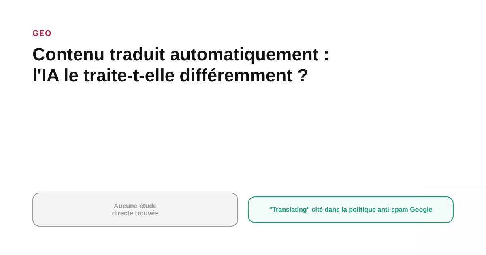
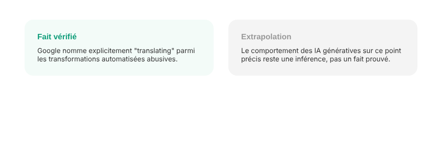

Contenu traduit automatiquement : les IA génératives le traitent-elles différemment du contenu humain ?
La question est légitime pour toute marque qui veut exister dans plusieurs langues sans traduire chaque page à la main. Elle n'a cependant pas de réponse directe à ce jour — aucune étude ne mesure spécifiquement ce point. Ce qui existe, en revanche, c'est une position officielle de Google sur un sujet très proche, qui éclaire indirectement la réponse.

Une marque qui veut exister dans plusieurs langues se pose presque toujours la même question : une traduction automatique de son contenu sera-t-elle traitée différemment, par Google comme par les IA génératives, qu'une version rédigée nativement par un humain dans chaque langue ? La question est légitime. Elle n'a cependant pas de réponse directe aujourd'hui : aucune étude publique ne mesure spécifiquement si ChatGPT, Perplexity ou Google AI Mode citent moins souvent, ou différemment, les pages traduites par une machine. Ce vide de données est lui-même une information utile — il évite de relayer une affirmation qui n'existerait que par répétition.
Ce qui est documenté, et qui n'est pas la même question
Ce qui existe en revanche, c'est une position officielle et explicite de Google sur un point adjacent : sa politique anti-spam sur l'abus de contenu à grande échelle (« scaled content abuse »). Cette politique définit l'abus de contenu à grande échelle comme la création de nombreuses pages pour manipuler le classement, « quelle que soit la façon dont il est créé ». Elle cite explicitement deux catégories de méthodes concernées : l'utilisation d'outils d'IA générative ou similaires pour produire de nombreuses pages sans apporter de valeur aux utilisateurs, et les transformations automatisées, « comme la synonymisation, la traduction, ou d'autres techniques d'obfuscation ». La traduction automatisée sans valeur ajoutée est donc explicitement nommée — mais dans le cadre d'un abus par le volume, pas comme une catégorie pénalisée en elle-même.

La nuance qui change tout : le volume sans supervision, pas la traduction elle-même
La formulation de Google est précise et mérite d'être lue au mot près : ce qui est visé, c'est la production de contenu « sans apporter de valeur aux utilisateurs », via une automatisation déployée à grande échelle. Une page traduite automatiquement puis relue, adaptée culturellement et vérifiée par une personne qui maîtrise la langue cible ne correspond pas à cette définition : elle apporte une valeur réelle à un lecteur qui ne parle pas la langue d'origine. C'est la même distinction qui s'applique déjà au contenu généré par IA en général sur ce blog : ce n'est pas l'outil utilisé qui est en cause, c'est l'absence de supervision humaine et de valeur ajoutée réelle pour le lecteur final.
Pourquoi on peut raisonnablement extrapoler, sans pour autant l'affirmer comme un fait prouvé
Les systèmes de citation des IA génératives, d'après ce qui est documenté par ailleurs sur leur fonctionnement (voir notre article sur la façon dont ChatGPT choisit ses sources), semblent privilégier des pages dont le contenu correspond précisément et clairement à l'intention de recherche. Un texte traduit mot à mot sans adaptation, truffé de formulations maladroites ou de faux-sens, constitue par nature un contenu de moins bonne qualité sémantique — ce qui, par extension logique plutôt que par preuve directe, pourrait réduire ses chances d'être jugé citable. C'est une inférence raisonnée à partir de mécanismes connus, pas une conclusion vérifiée par une étude dédiée au sujet précis de la traduction. La distinction entre les deux doit rester claire pour quiconque prend une décision sur cette base.
Ce que ça change concrètement pour une stratégie multilingue
En l'absence de preuve directe, la décision raisonnable reste la même que celle déjà recommandée pour le SEO international classique : traiter la traduction automatique comme un premier jet à systématiquement relire et adapter par une personne qui maîtrise la langue et le marché cible, jamais comme un livrable final publiable tel quel. Ce choix protège à la fois contre le risque documenté (la politique anti-spam Google sur le volume non supervisé) et contre le risque non prouvé mais plausible (une moindre citabilité par les IA génératives) — sans qu'il soit nécessaire de trancher laquelle des deux justifications pèse le plus pour agir correctement.
FAQ
Les IA génératives citent-elles moins souvent le contenu traduit automatiquement ?
Aucune étude connue ne mesure directement cette question. Ce qui est documenté, c'est que Google classe la traduction automatisée sans valeur ajoutée parmi les techniques d'abus de contenu à grande échelle dans sa politique anti-spam, au même titre que la génération massive par IA sans supervision.
Une page traduite et relue par un humain est-elle pénalisée par Google ou par les IA ?
Rien n'indique cela dans les politiques publiques de Google ni dans les études disponibles sur les citations IA. La politique anti-spam cible explicitement l'absence de valeur ajoutée produite par une automatisation non supervisée, pas la traduction en tant que telle.
Faut-il éviter de traduire son contenu avec une IA pour le marché international ?
Non, mais une traduction automatique publiée sans relecture ni adaptation reste un contenu à faible valeur ajoutée, exposé au même risque que n'importe quel contenu généré en masse sans supervision humaine — que ce soit pour le SEO classique ou pour la visibilité dans les réponses IA.
Une stratégie de contenu multilingue à structurer proprement ?
Pour aller plus loin, voir la page GEO, et l'article GEO multilingue : comment les IA génératives traitent votre marque dans une autre langue.
Pour continuer sur ce sujet.